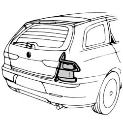
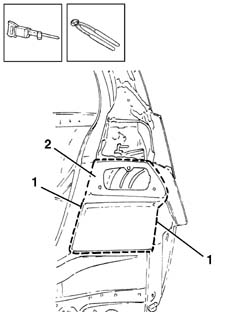
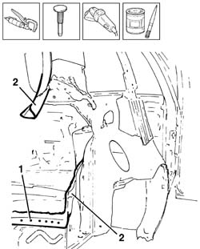
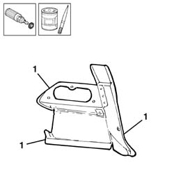
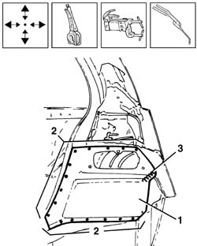
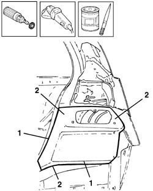

7210B75 tail light seat
- Path
- Procedures > 72 PANELS AND FRAME > 7210 REMOVING REFITTING > 7210B structure elements-central and rear part > 7210B75 tail light seat
- Kind
- repair procedure (removal / refitting; the operation number is the code)
- Applies to
- all engines; all production periods
- Interactive page
- https://sloeber94.github.io/elrnDB-a156/en/#/3239042
Applies to: all engines; all production periods; only with equipment: Station Wagon
 Removing
Removing
 Refitting
RefittingCheck if any of the connected parts are deformed by checking body alignment dimensions. Use appropriate measurement tools (reference rigs, templates or gauges).
Straighten the body if necessary.

Applies to: all engines; all production periods; only with equipment: Station Wagon
1. Using a power saw, make the cut along the join line between the headlamp seating and wing.
2. Remove the headlamp seating.

Applies to: all engines; all production periods; only with equipment: Station Wagon
1. Dress down the spot welds on the edges of the headlamp seating.
2. Remove the excess from the panel.
Use a grinding wheel to remove the weld spot residues.
Use a rotary brush to clean treated areas.
Apply electroweldable paint in the areas to be welded.

Applies to: all engines; all production periods; only with equipment: Station Wagon
1. Use a rotary brush to remove the rust-proofing from around the edge of the part.
Apply electroweldable paint finish to the affected parts.

Applies to: all engines; all production periods; only with equipment: Station Wagon
Refitting
Removing1. Correctly position the replacement part on the bodyshell, align it and secure it using self-locking clamps.
2. Use a spot welder to weld the headlamp seating in the areas shown in the figure.
3. Hard solder the area shown in the diagram.
Check that the welded parts are correctly aligned.

Applies to: all engines; all production periods; only with equipment: Station Wagon
1. Level the spot welds using a disc grinder.
Use a brush to clean the areas concerned.
2. Apply rust-proofing to the newly welded areas.

Applies to: all engines; all production periods; only with equipment: Station Wagon